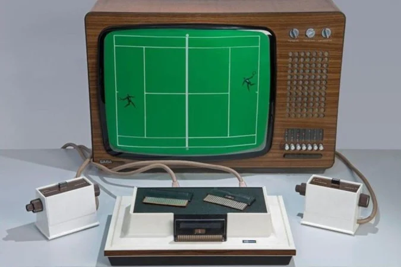
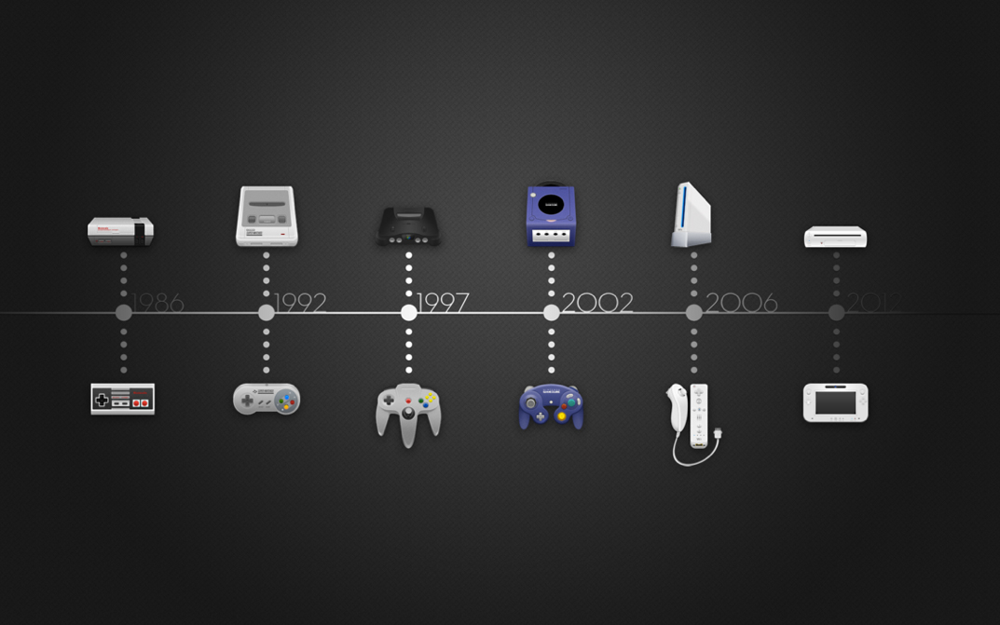

Evolução dos Videogames
Evolução dos Videogames:
A evolução dos videogames é uma história fascinante que reflete as transformações tecnológicas e culturais das últimas décadas. Desde os primeiros consoles simples até as plataformas modernas com gráficos ultra-realistas e realidade virtual, os jogos eletrônicos conquistaram um espaço fundamental no entretenimento mundial. Esta jornada pela história dos videogames nos apresenta não apenas inovações técnicas, mas também mudanças na maneira como interagimos e nos conectamos com as mídias digitais. Ao longo dos anos, jogos que antes eram limitados a telas pequenas e controles básicos se tornaram experiências imersivas e sociais, capazes de atingir públicos variados. Com o avanço dos processadores, a internet e as tecnologias de streaming, o universo dos videogames ampliou seus horizontes, tornando-se uma indústria bilionária e uma forma de arte reconhecida globalmente.
[Topo]O Primeiro Videogame

Quem criou o primeiro videogame?
O primeiro videogame foi idealizado e inventado por Ralph Baer. O Engenheiro alemão criou o Magnavox Odyssey 100. O console, apresentado em abril de 1972, mas lançado só em setembro do mesmo ano, tinha um diferencial bastante interessante: seu teclado embutido, que permitia que o usuário jogasse todos os jogos lançados pela Atari, a empresa desenvolvedora.
[Topo]Primeiro videogame:
O primeiro videogame reconhecido foi criado na década de 1950, mas o marco mais importante aconteceu em 1958 com o desenvolvimento de “Tennis for Two”, criado pelo físico William Higinbotham. Este jogo simples simulava uma partida de tênis em um osciloscópio, sendo uma das primeiras tentativas de interatividade eletrônica para entretenimento. Porém, o título geralmente considerado o primeiro videogame comercial e popular foi “Pong”, lançado em 1972 por Nolan Bushnell e sua companhia Atari. “Pong” revolucionou a indústria ao trazer um jogo acessível para o público em geral em máquinas de fliperama, dando início à popularização dos videogames Esses primeiros jogos, mesmo com gráficos básicos, abriram caminho para o desenvolvimento de consoles domésticos e expandiram a ideia de jogos eletrônicos como forma de diversão. A invenção dessas experiências pioneiras foi fundamental para a evolução dos videogames e para a criação da indústria multimilionária que conhecemos hoje.[Alerta Nerd]
Quais são as gerações dos Videogames

A evolução dos videogames pode ser dividida em várias gerações, cada uma marcada por avanços tecnológicos e mudanças significativas no design e na jogabilidade. A primeira geração, iniciada no final dos anos 1970, trouxe os consoles domésticos simples, como o Magnavox Odyssey, que apresentavam jogos básicos em preto e branco. A segunda geração destacou-se pela popularização dos consoles da Atari, com gráficos aprimorados e maior variedade de jogos. A terceira geração, também conhecida como era 8-bits, foi marcada pelo lançamento do Nintendo Entertainment System (NES), que revolucionou o mercado após a crise dos videogames de 1983. As gerações seguintes trouxeram melhorias constantes: a quarta geração (16-bits) com Super Nintendo e Sega Genesis; a quinta, com a chegada dos primeiros jogos em 3D e CD-ROMs; até as gerações atuais, que incluem consoles poderosos como PlayStation 5 e Xbox Series X, capazes de gráficos realistas e experiências online complexas. Cada geração representa um salto que contribuiu para o crescimento e a diversidade do universo dos videogames.[Topo][Alerta Nerd]
[Topo]Linha do tempo da evolução dos videogames:
A evolução dos videogames é marcada por lançamentos que mudaram a forma como interagimos com o entretenimento digital. Acompanhe os principais consoles desde os primeiros modelos até os mais recentes:1. Magnavox Odyssey (1972);
2. Atari 2600 (1977);
3. Nintendo Entertainment System (NES) (1983);
4. Sega Genesis (1988);
5. Super Nintendo Entertainment System (SNES) (1990);
6. Sony PlayStation (1994);
7. Nintendo 64 (1996);
8. PlayStation 2 (2000);
9. Xbox Original (2001);
10. Nintendo Wii (2006);
11. PlayStation 3 (2006);
12. Xbox 360 (2005);
13. PlayStation 4 (2013);
14. Xbox One (2013);
15. Nintendo Switch (2017);
16. PlayStation 5 (2020);
17. Xbox Series X|S (2020).
[Alerta Nerd]
Qual é o cenário atual dos Videogames
Os videogames são agora uma indústria maior do que a do cinema e dos esportes combinados. Em 2012, foram pouco mais de US$ 52 bilhões faturados no mercado. Já em 2021, porém, esse número saltou para US$ 175 bilhões, depois da chegada da pandemia e o consequente aumento de pessoas que buscavam entretenimento enquanto estavam em casa. Outra coisa que mudou foi a transformação dos jogos em esportes competitivos. Ser gamer, atualmente, é uma profissão bastante desejada, sobretudo pelos jovens da última geração. Estima-se que o mercado de eSports já movimenta pouco mais de US$ 180 bilhões por ano, segundo relatório da Newzoo, divulgado pouco antes do fim de 2021.
[Topo]Como serão os Videogames do futuro

A tendência é que os videogames se tornem cada vez mais imersivos e focados em experiências sensoriais diferenciadas. Com a chegada do metaverso, por exemplo, Realidade Virtual e Realidade Aumentada são recursos que serão cada vez mais vistos nos consoles. O que muda? A capacidade de interação entre os usuários e a possibilidade do contato com universos diferentes.
[Topo]